OYUN • KİMLİK • REKLAMGERÇEK OYUNDANKüçük bir masadan
Küçük bir masadan
kendi kafene.
Demlio için gerçek oyun mekanikleriyle çekilmiş kısa bir hikâye. Topla, temizle, servis yap; kazancını ekibine yatır.
18,53 saniye • 1080 × 1920 • 30 FPS
H.264 görüntü / AAC ses • Türkçe altyazı
Ayrı Türkçe ses
Seslendirme metni · Altyazı · Müzik · Efektler
Ses yerel Türkçe sentezdir; insan stüdyo kaydı değildir. Marka telaffuzu otomatik tanımayla doğrulanamadı. Mevcut karakterlerin kaynak kaydı Clean It'ten çıkarıldıklarını belirtiyor; yayın hakkı doğrulanmadı. Bu dosyalar mağazaya yüklenmedi.
Mağaza için altı gerçek an


Ortak görsel kimlik


Şeffaf logo · Koyu logo · Renk ve tipografi · Kaynaklar ve tekrar üretim